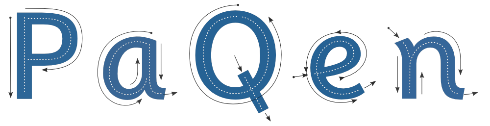

topmarks fonts
a typeface family for infant learning
topmarks fonts
a typeface family for infant learning
topmarks fonts
a typeface family for infant learning
topmarks fonts
a typeface family for infant learning


About Topmarks Fonts
The Topmarks fonts are a Free Software typeface family being developed in response to teachers and educators who find a lack of fonts suitable for use in infant learning. The aim of developing the Topmarks fonts is to widen the choice of suitable typefaces available for use in teaching resources such as worksheets and interactive whiteboard resources.
The Topmarks fonts are being developed in various weights and versions to suit the different needs found in children's learning.
Getting and Using the Topmarks Fonts
First versions of the Topmarks fonts are freely available. Download them from the links below. The fonts are in both OpenType and TrueType formats. There is also a webfont kit available for using the Topmarks fonts in web pages.
Topmarks Regular & Bold
a b c d e f g h i j k l m n o p q r s t u v w x y z A B C D E F G H I J K L M N O P Q R S T U V W X Y Z ! ? 9 8 7 6
a b c d e f g h i j k l m n o p q r s t u v w x y z A B C D E F G H I J K L M N O P Q R S T U V W X Y Z ! ? 9 8 7 6 5 4 3 2 1
a b c d e f g h i j k l m n o p q r s t u v w x y z A B C D E F G H I J K L M N O P Q R S T U V W X Y Z ! ? 9 8 7 6 5 4 3 2 1
a b c d e f g h i j k l m n o p q r s t u v w x y z A B C D E F G H I J K L M N O P Q R S T U V W X Y Z ! ? 9 8 7 6
a b c d e f g h i j k l m n o p q r s t u v w x y z A B C D E F G H I J K L M N O P Q R S T U V W X Y Z ! ? 9 8 7 6 5 4 3 2 1
a b c d e f g h i j k l m n o p q r s t u v w x y z A B C D E F G H I J K L M N O P Q R S T U V W X Y Z ! ? 9 8 7 6 5 4 3 2 1
Free Software
The Topmarks fonts are released under the Open Font License. This license allows the fonts to be used freely, by an unlimited numbers of users. The Topmarks fonts can be used for printing, as webfonts, for setting digital documents, embedding in other software, used in commercial or non-commercial work, pretty much anything. Also, being Free Software, the Topmarks fonts can be shared, given away, or even altered.
Roadmap & Funding
The Topmarks Fonts have been steadily under development for over 12 months. It is now planned to raise development funding via indiegogo so that the fonts can be developed further, and completed in a more concentrated effort.
Six weights of Topmarks Sans are planned; Thin,Light,Regular,Medium,Bold,Heavy, plus italics, and two weights of Topmarks Mono;00 Regular and Bold
Topmarks Fonts are maintained by vernnobile on github | this site is published with GitHub Pages, Jekyll and Bootstrap